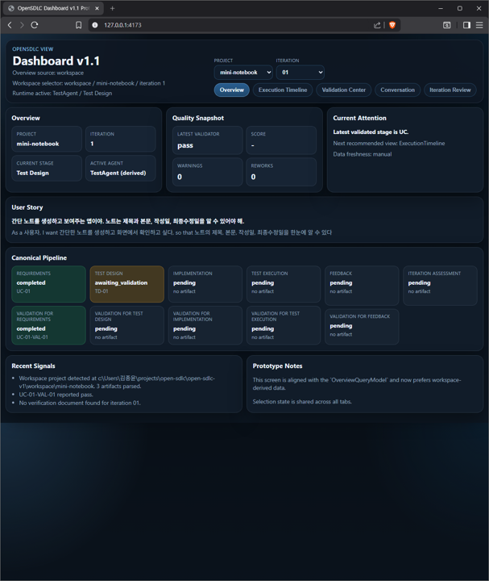

Overview
현재 진행 상태를 한 화면에서 요약해 보여주는 메인 화면
프로젝트, iteration, active stage, 품질 상태를 한 번에 보여주어 현재 운영 상황을 빠르게 파악할 수 있게 해줍니다.
현재 상태 요약
프로젝트, iteration, current stage, active agent를 한 번에 확인할 수 있습니다.
품질 스냅샷
latest validator, warning, rework 같은 핵심 상태를 빠르게 읽게 해줍니다.
파이프라인 가시화
canonical pipeline이 어디까지 진행됐는지 즉시 파악할 수 있어 운영 보고의 시작점이 됩니다.